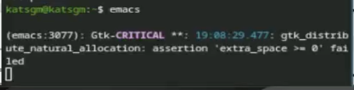
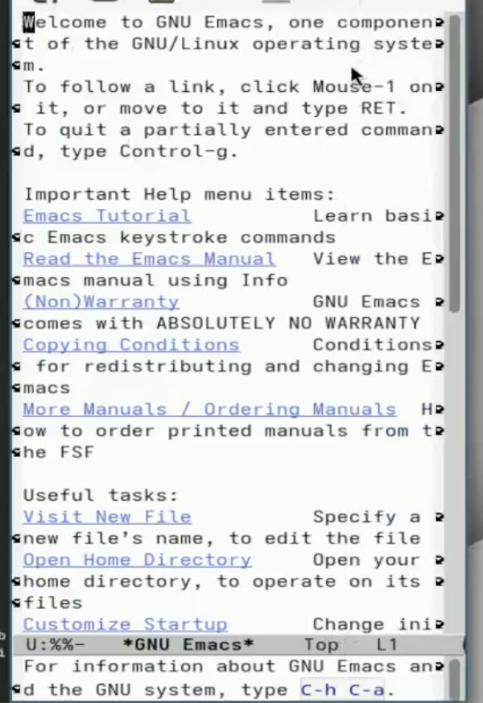
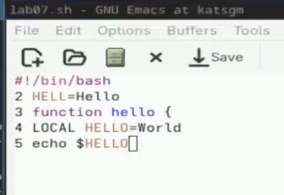
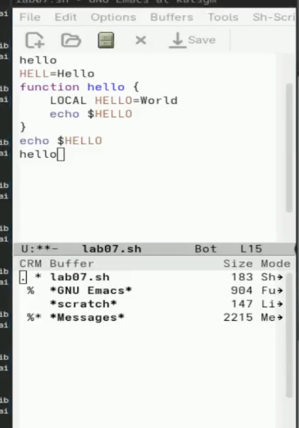
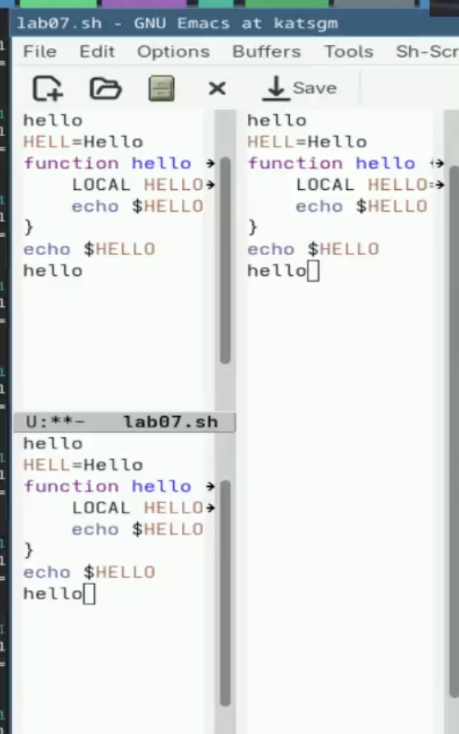

Использую команды по перемещению курсора. 6.1. Переместите курсор в начало строки (C-a). 6.2. Переместите курсор в конец строки (C-e). 6.3. Переместите курсор в начало буфера (M-<). 6.4. Переместите курсор в конец буфера (M->). —
Управление буферами.

7.1. Вывести список активных буферов на экран (C-x C-b). 7.2. Переместитесь во вновь открытое окно (C-x) o со списком открытых буферов и переключитесь на другой буфер. 7.3. Закройте это окно (C-x 0). 7.4. Теперь вновь переключайтесь между буферами, но уже без вывода их списка на экран (C-x b).

Кратко охарактеризуйте редактор Emacs. Emacs — мощный расширяемый текстовый редактор с поддержкой множества режимов, написанный на Elisp.
Какие особенности могут сделать Emacs сложным для новичков? Множество комбинаций клавиш, непривычная терминология, высокая настраиваемость.
Что такое буфер и окно в Emacs? Буфер — область памяти с текстом. Окно — область экрана, отображающая буфер.
Можно ли открыть больше 10 буферов в одном окне? Да, количество буферов не ограничено.
Какие буферы создаются по умолчанию при запуске Emacs? scratch, Messages, GNU Emacs.
Как ввести комбинации C-c | и C-c C-|? C-c | = Ctrl + c, затем
Shift +
C-c C-| = Ctrl + c, затем Ctrl + Shift +
Как разделить текущее окно на две части? C-x 2 (горизонтально), C-x 3 (вертикально).
Где хранятся настройки Emacs? В файле ~/.emacs или ~/.emacs.d/init.el.
Можно ли переназначить клавиши? Да, через global-set-key.
Какой редактор удобнее — vi или Emacs? Ответ субъективен. Emacs удобнее для программирования и интеграции, vi — для быстрого редактирования в терминале.
В ходе выполнения лабораторной работы познакомился с операционной системой Linux, получил практические навыки работы с редактором Emacs.